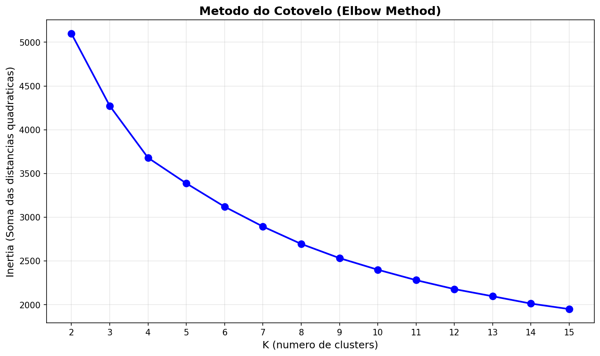
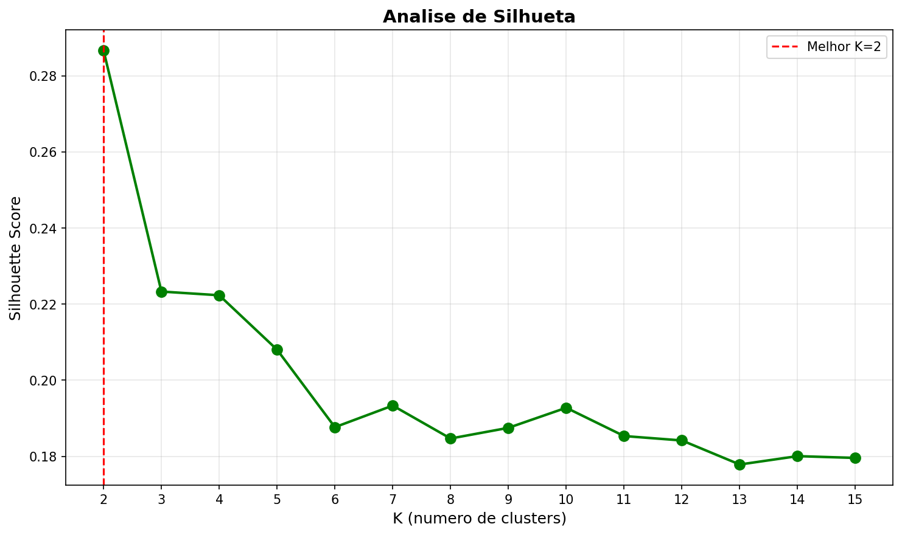

Metodos: Elbow Method e Silhouette Analysis
K range testado: 2 a 15

O cotovelo aparece aproximadamente em K=2 a K=4, onde a taxa de decrease da inertia comeca a desacelerar.

| K | Inertia | Silhouette |
|---|---|---|
| 2 | 5099.06 | 0.2867 |
| 3 | 4273.52 | 0.2233 |
| 4 | 3679.38 | 0.2223 |
| 5 | 3386.96 | 0.2080 |
K=2 foi selecionado como otimo baseado no maior silhouette score.